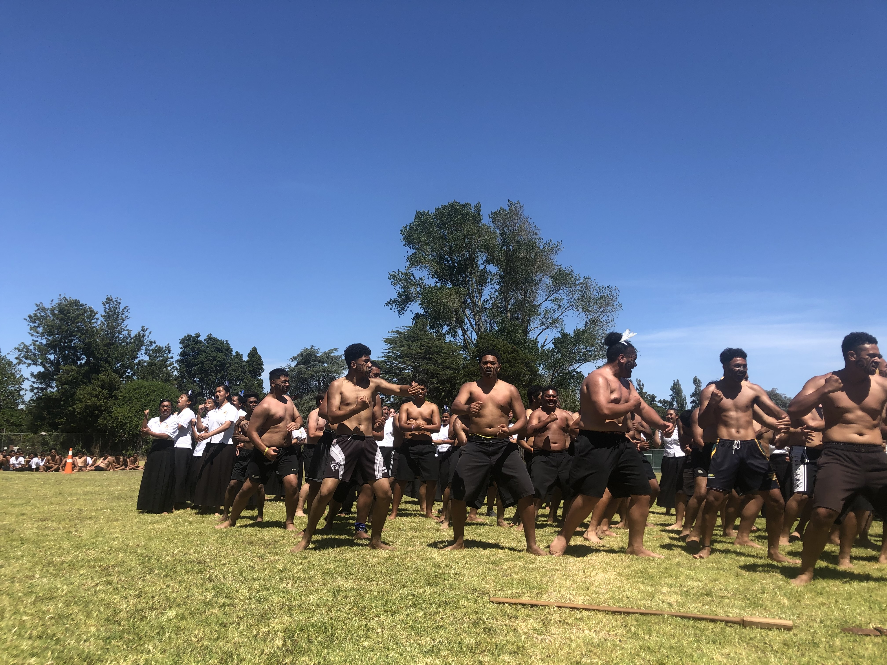
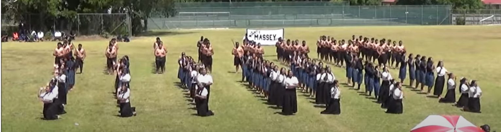
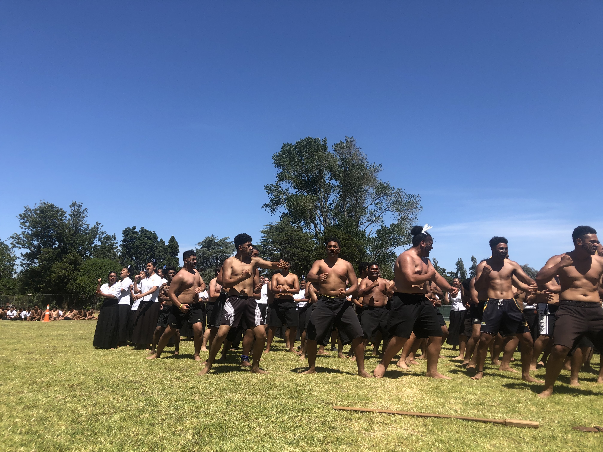
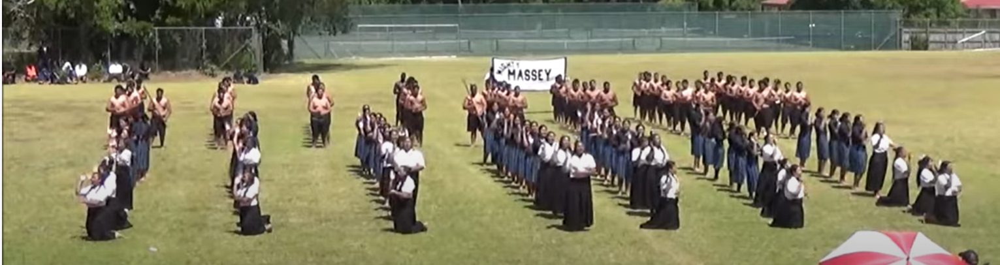

Types of waiata
Waiata can be grouped according to form and function. The three main types of traditional waiata are oriori (lullabies), waiata tangi (laments) and waiata aroha (love songs). Waiata tangi are laments about issues such as illness, death, loss of land or a wrecked canoe. Waiata aroha often focus on the sad aspects of love, such as a husband away at war or loss of a lover. Waiata aroha were composed for a broad range of topics, including a daughter married into another tribe, traditional lands and guns.
Oriori were traditionally composed for children of rank, and were used as part of their early education.
Other classes of waiata include pātere – songs composed by women in reply to jealousy or insults; kaioraora – cursing songs; ruri – amorous songs; and mata – prophetic songs.
Haka
Haka are a large subclass of waiata. Peruperu, performed on the battlefield with weapons, is the fiercest haka. Haka taparahi is a ceremonial dance performed without weapons. Haka pōwhiri are performed during a welcome – usually by men, although the women of Ngāti Porou and Te Whānau-a-Apanui also perform these haka.